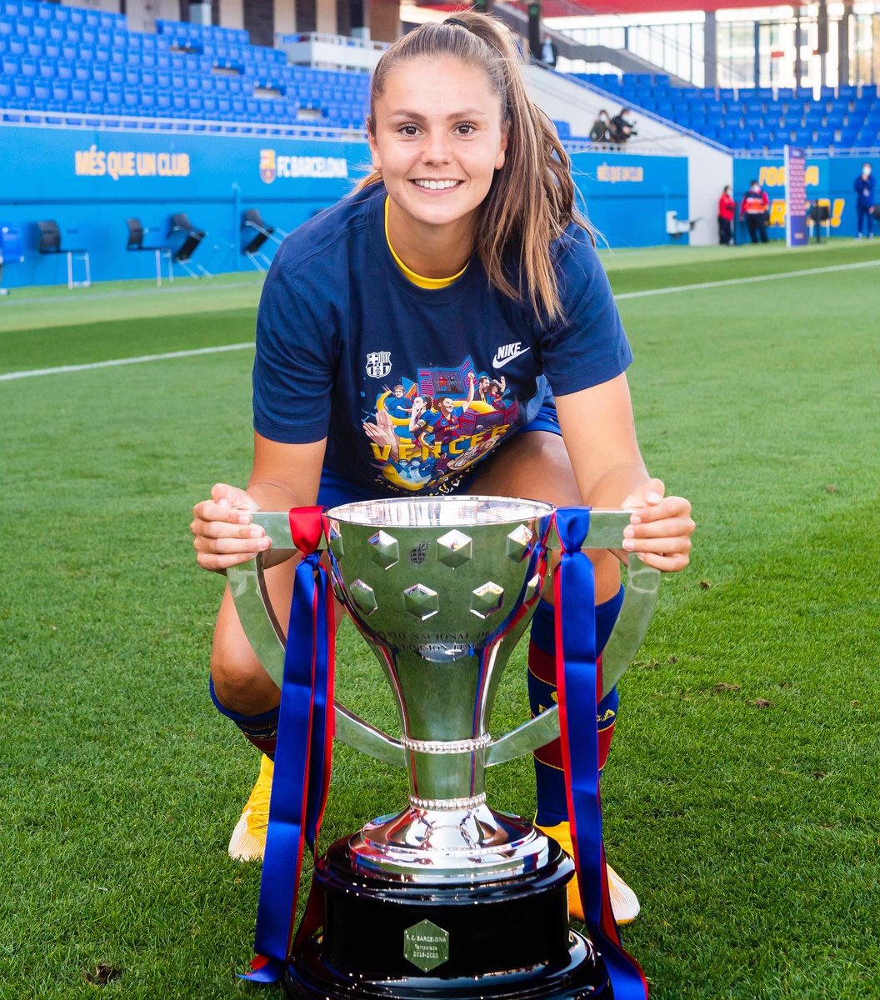

Lieke Martens
Lieke Martens ha sido una de las ganadoras del premio The Best.
En el año 2017 se proclamó campeona de la Eurocopa Femenina 2017 con la Selección femenina de fútbol de los Países Bajos, contabilizando 3 goles y 2 asistencias en toda la competencia y siendo elegida como la mejor jugadora del torneo. Tras convertirse en campeona de Europa, fue nombrada Caballero de la Orden de Orange-Nassau. El 23 de octubre de 2017 fue galardonada como la mejor futbolista del año con el premio The Best FIFA Women's Player, de la FIFA. En el año 2019 se proclamó subcampeona con los Países Bajos en el Mundial Femenino.